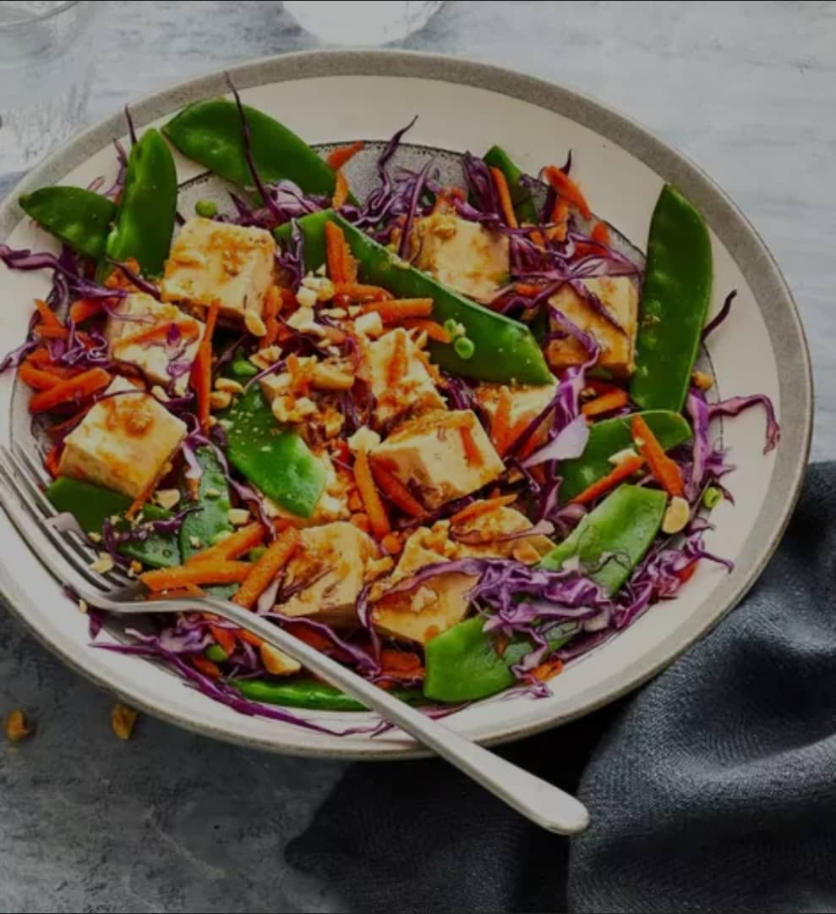

r
Tofu Salad Recipes
TOFU SALAD

DESCRIPTION
This refreshing tofu salad is light, protein packed, and perfect for hot summer days. The combination of fresh vegatables and marinated tofu makes it both healthy and satisfying.
It's vegan, gluten free, and it takes about 15 minutes to prep and 5 minutes to cook, making it a great option for a quick lunch or side dish.
INGREDIENTS
Marinated Tofu:
- 1 tablespoon sweet chili sauce
- 1 tablespoon dark soy sauce
- 1 tablespoon sesame oil
- 2 cloves garlic, crushed
- ½ teaspoon grated fresh ginger root
- 8 ounces extra-firm tofu, drained and diced
Salad:
- 1 cup snow peas, trimmed
- 1 cup finely shredded red cabbage
- 2 small carrots, grated
- 2 tablespoons chopped peanuts
STEPS
Step 1
- Make the tofu: Whisk chili sauce, soy sauce, sesame oil, garlic, and ginger together in a large bowl. Add tofu and toss to coat. Cover and marinate for 1 hour in the refrigerator.
Step 2
- When the tofu is almost finished marinating, bring a pot of water to a boil. Add snow peas and blanch for 1 to 2 minutes. Transfer with a slotted spoon to a bowl of cold water. Drain and blot dry.
Step 3
- Make the salad: Combine snow peas, cabbage, carrots, and peanuts in a bowl. Add tofu and marinade and toss gently to combine.
HOME